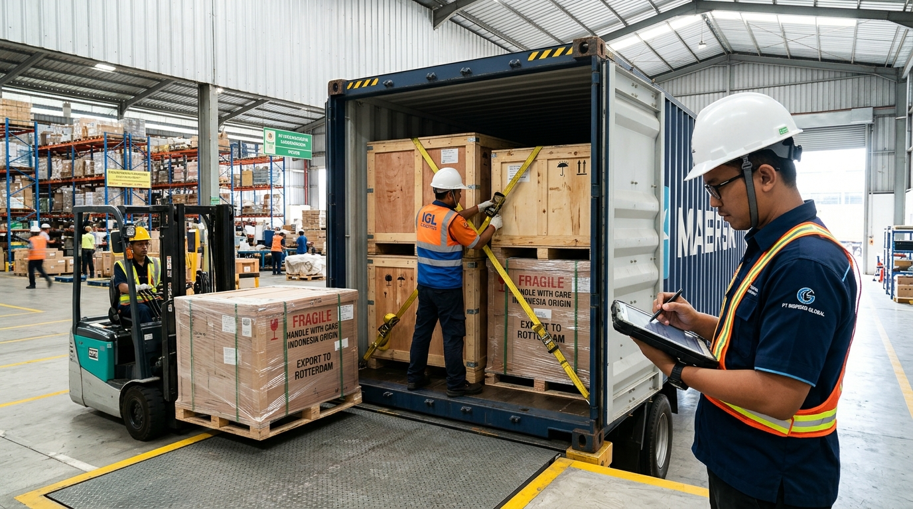

Bawa produk dan komoditas unggulan Anda menembus pasar internasional. Kami menyediakan solusi pengurusan ekspor terpadu bagi produsen, pabrik, eksportir pemula, hingga UMKM: mulai dari Jasa Undername Ekspor (sewa legalitas), submit PEB & NPE Bea Cukai, sertifikasi COO/Karantina/Fumigasi, hingga pengapalan kontainer (FCL/LCL) ke Asia, Eropa, Timur Tengah, dan Amerika.
Kami menjembatani setiap tahapan ekspor Anda agar bebas dari kendala birokrasi, penolakan dokumen, maupun risiko barang tertahan di pelabuhan.
Belum memiliki izin ekspor, NIB ekspor, atau NIK Bea Cukai? Anda tetap bisa mengekspor komoditas dan produk secara sah menggunakan legalitas PT Global Expor Indonesia dengan sistem QQ.
Penanganan input Pemberitahuan Ekspor Barang (PEB) ke sistem EDI Bea Cukai Republik Indonesia hingga terbitnya Nota Pelayanan Ekspor (NPE) sebagai izin resmi pemuatan ke kapal/pesawat.
Booking slot kapal kargo laut internasional dengan shipping line terkemuka (Maersk, MSC, CMA CGM, COSCO, ONE, Evergreen). Tersedia pilihan kontainer 20ft, 40ft High Cube, Reefer pendingin, dan LCL.
Pengurusan menyeluruh Surat Keterangan Asal (SKA / COO Form E, D, AK, AANZ) agar buyer di luar negeri menikmati fasilitas tarif bea masuk 0%, sertifikat karantina tumbuhan (Phytosanitary), dan fumigasi.
Layanan penjemputan barang dari pabrik/kebun Anda dengan armada trailer kontainer, pengawasan muat (stuffing supervision), pemasangan segel botol (seal), dan pengantaran ke terminal peti kemas pelabuhan.
Kirimkan sampel produk ke calon buyer global atau kargo mendesak via udara. Kami juga memberikan pendampingan penelaahan Letter of Credit (L/C) untuk memastikan kepatuhan klausul perbankan internasional.
Kami mengurus seluruh berkas wajib kepabeanan, perizinan instansi, dan instrumen perdagangan internasional.
Pemberitahuan Ekspor Barang dan Nota Pelayanan Ekspor resmi dari sistem EDI Kepabeanan.
Bukti kepemilikan kargo dan kontrak pengangkutan resmi dengan pelayaran / maskapai.
Sertifikat asal barang dari Kemendag untuk membebaskan bea masuk bagi buyer Anda.
Sertifikasi bebas hama/penyakit dari Badan Karantina Indonesia untuk komoditas pertanian.
Sertifikat perlakuan fumigasi untuk kemasan kayu, palet kayu, dan kargo organik.
Perjanjian kerja sama legalitas resmi atas nama consignor/shipper terdaftar.
Sesuaikan dengan kesiapan badan usaha Anda saat ini. Kedua opsi didukung penuh oleh tim kepabeanan kami.
| Parameter Layanan | Jasa Undername Ekspor (QQ) �?/th> | Ekspor dengan PT / Izin Sendiri |
|---|---|---|
| Izin Ekspor & NIB Ekspor | Gunakan Legalitas PT Kami | Wajib Memiliki Sendiri |
| Pengurusan PEB & NPE Bea Cukai | Ditangani 100% oleh tim PPJK kami | Ditangani oleh tim kami via EDI PT Anda |
| Nama Shipper / Eksportir | PT Global Expor Indonesia QQ Nama Perusahaan Anda | 100% Nama Perusahaan Anda |
| Penerbitan SKA / COO Form E, D, AK | Diterbitkan resmi dengan akun e-SKA kami | Diterbitkan melalui akun e-SKA Anda |
| Penerimaan Pembayaran Buyer | Bisa via rekening escrow kami lalu diteruskan ke Anda | Masuk langsung ke rekening Devisa Anda |
| Sangat Cocok Untuk | UMKM, Petani, Pengrajin, Trader Baru, Eksportir Partai Kecil | Pabrik & Perusahaan Berizin Lengkap |
Ketahui estimasi dokumen wajib, durasi transit pelayaran, dan perkiraan biaya handling ekspor kargo Anda.
Ubah pilihan berikut untuk memperbarui analisis secara otomatis:
Kami mendampingi proses dari penyiapan dokumen hingga kargo diberangkatkan dari pelabuhan laut atau bandara udara Indonesia.
Kirimkan rincian produk, invoice/packing list, dan negara tujuan. Kami periksa HS Code, regulasi lartas ekspor, dan syarat karantina.
Pemesanan ruang kapal (Shipping Order), pengambilan kontainer kosong di depo, dan penarikan trailer ke pabrik untuk proses stuffing.
Penginputan data Pemberitahuan Ekspor Barang ke sistem Bea Cukai. Setelah verifikasi, terbit Nota Pelayanan Ekspor (NPE) resmi.
Pengurusan Surat Keterangan Asal (e-SKA) Kemendag, sertifikat Phytosanitary, fumigasi ISPM 15, dan pengesahan B/L pelayaran.
Kontainer dimuat ke kapal (On Board) dan seluruh dokumen ekspor asli diserahkan kepada Anda atau dikirim via kurir ke buyer luar negeri.
Armada dan jaringan perwakilan kami beroperasi aktif di gerbang logistik laut dan udara internasional utama Nusantara.
Jakarta / Jawa Barat ??Hub tersibuk dengan direct call ke Asia, US & Eropa
Surabaya / Jawa Timur ??Gerbang ekspor hasil tani & manufaktur
Medan / Sumatera Utara ??Hub ekspor sawit, kopi, karet & rempah
Semarang ??Pusat ekspor furniture kayu, garmen & kerajinan
Sulawesi Selatan ??Gerbang ekspor kakao, hasil laut & rempah timur

Reputasi eksportir di mata buyer luar negeri sangat ditentukan oleh ketepatan spesifikasi kargo, kualitas packing, dan integritas dokumen. Kami memastikan setiap kontainer yang berangkat telah melalui prosedur kendali mutu terbaik.
Penataan beban merata, lashing pengikat tali kargo, dan pemasangan silika gel anti-lembab.
Menghindari penolakan dan karantina keras di pelabuhan tujuan Eropa, Australia, dan AS.
Laporan visual transparan yang siap Anda kirimkan kepada buyer luar negeri sebagai bukti profesionalisme.
Informasi esensial untuk memandu langkah pertama ekspor produk Anda ke pasar dunia.
Bisa! Anda dapat memanfaatkan layanan Jasa Undername Ekspor (QQ) kami. Dokumen PEB Bea Cukai dan pengapalan akan diproses secara legal menggunakan izin dan NIK Kepabeanan milik PT Global Expor Indonesia, sementara nama usaha Anda tetap dicantumkan sebagai produsen/shipper pendamping.
Certificate of Origin (Surat Keterangan Asal) membuktikan bahwa komoditas/produk diproduksi asli di Indonesia. Melalui perjanjian perdagangan bebas (FTA), COO seperti Form E (ke China), Form D (ke ASEAN), atau Form AK (ke Korea) memungkinkan buyer luar negeri Anda mendapatkan fasilitas pembebasan atau pengurangan bea masuk hingga 0% di negaranya, sehingga produk Anda jauh lebih kompetitif.
Kami melayani pengiriman dari skala kecil hingga kontainer penuh:
Jika menggunakan PT Anda sendiri, buyer mentransfer langsung ke rekening devisa (USD/EUR) Anda. Jika menggunakan skema Undername Ekspor, buyer mentransfer ke rekening resmi perusahaan kami, dan setelah dana masuk serta dipotong biaya jasa kesepakatan, dana devisa langsung kami cairkan/transfer ke rekening bank Anda dengan kurs transparan dan bukti sah.
Ya. Hampir seluruh negara importir mensyaratkan Sertifikat Karantina Tumbuhan (Phytosanitary Certificate) untuk hasil pertanian (kopi, rempah, vanili, kelapa, dll) untuk mencegah masuknya hama invasif. Tim lapangan kami mengawal proses pengambilan sampel dan uji laboratorium karantina hingga sertifikat resmi terbit.
Tentu bisa. Kami memberikan saran apakah penawaran terbaik untuk produk Anda sebaiknya menggunakan FOB (Free on Board - tanggung jawab sampai kapal berlayar dari Indonesia) atau CIF (Cost, Insurance & Freight - Anda mengurus sampai port tujuan buyer). Kami siapkan rincian tarif akurat sehingga margin keuntungan Anda terlindungi.
Isi formulir singkat di bawah ini. Tim ahli ekspor Global Expor Indonesia akan segera menghubungi Anda dengan telaah regulasi dan penawaran biaya resmi.